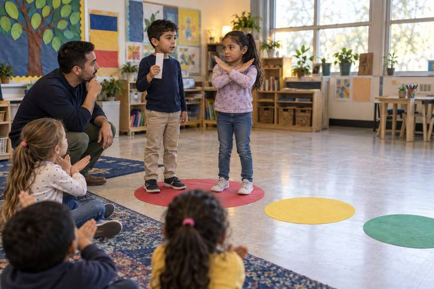
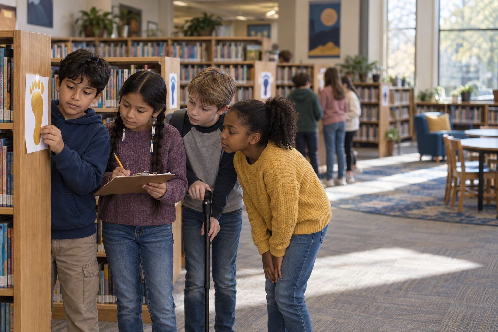

Student learningfor Grades K–2
Private or Share?
Children walk to a red, yellow, or green "traffic light" to sort personal information, then practice what to say when a game or talking computer asks for it.

All activities Student learning
Teams follow a trail of paper footprints left online by a fictional fourth grader, piece together what a stranger could learn about him, and plan the footprints they want to leave.
Every post, comment, photo, quiz answer, and chatbot message leaves a digital footprint, and footprints add up. In this walk-around mystery, teams follow twelve paper footprints left by Kai Morales, a fictional fourth grader. No single post seems like a big deal. Put together, they reveal Kai's school, street, house number, the hint to his password, and when he's home alone. The trail also includes footprints Kai can be proud of. Teams then give Kai a footprint makeover and plan their own trail, including what they will and won't type into AI tools.
Hook
Show one big paper footprint with a muddy smear drawn on it. Ask: "What can you tell about who made this?" (Size, shoe type, direction, maybe where they'd been.) Say: "Real footprints wash away. Online footprints are different. Every time you post, comment, or type into an app, you leave one, and people can follow the trail. Today you'll follow Kai's trail."
Facilitator noteEmphasize that Kai is made up. No one in class should be "the Kai."
Explore
Teams move from footprint to footprint (about 1 minute each; they won't finish all 12, and that's fine). At each footprint they fill a row of Handout B: What could someone learn? Who might see it? Helpful, risky, or hurtful? Roles: Reader reads the card aloud, Detective answers "what could someone learn?", Recorder writes, Timekeeper calls the move. Rotate roles every three footprints.
Facilitator noteListen for teams connecting footprints ("The dog's name is Biscuit, and he said his password is almost his dog's name!"). That combining move is the key insight.
Debrief
Gather teams around the chart paper. Ask each team to add one thing a stranger now knows about Kai. Build the list: school name, street, house number, dog's name and password hint, home alone Tuesdays until 6. Pause and ask: "Which one post gave all that away?" (None did. Together they did.) Then ask about the other kinds of footprints: "What would a new coach or a new friend think after seeing the mean comment? After seeing the marble-run video or the food drive?"
Facilitator noteStudents often feel strongly about card 11 (the deleted comment someone screenshotted). Use it to teach that deleting doesn't always make something disappear.
Model
Teach three moves and write them on the board: Pause (Should this be online at all?), Picture your audience (Who could see this now, and in five years?), Protect (Take out names, places, faces, and schedules). Model on Footprint 3: "Kai can still share his new bike! Pause: sure. Picture: anyone could see it. Protect: crop out the house number, or take the photo in the park." Add: "The same goes for chatbots and homework helpers. What you type can be saved, so leave out your full name, address, and other private details."
Facilitator noteKeep the message positive: the goal is not "never post," it's "post on purpose."
Create
Each team chooses two risky or hurtful footprints and rewrites them on the back of Handout B as safer versions that still let Kai share what he wanted to share. Teams read one makeover aloud; the class checks it with the three P's. Example: "Home alone every Tuesday!" becomes "Can't wait for our Tuesday game night!" posted after the fact, with no times.
Facilitator noteFor the mean comment, the best makeover is often a kind comment, or no comment. Accept "don't post it" when students explain why.
Reflect
Students complete Handout C: draw a footprint they'd be proud to leave, list two things they won't post or type into an app or chatbot, write what they'll do if they leave a footprint they regret, and name one online strength and one habit to improve. Collect as evidence.
Facilitator noteLook for specific private items (house number, schedule, password hints) instead of a vague "personal stuff."
The whole activity is a paper trail: footprint cards on the wall, a clipboard log, and a chart-paper profile. If you can't move around, hand each team the 12 cards in an envelope and have them lay the cards in a line on their desks as the "trail."
After the Debrief, project a mock "profile page" you build on a slide from the clues the class found (name, school, street, pet, schedule) so students see how scattered footprints look when someone collects them in one place. Optionally, project a district-approved AI chatbot and ask it, as the class watches: "What personal information should a 9-year-old never type into a chatbot?" Compare its answer to the class's list and discuss any differences. Students don't use their own AI accounts; the teacher drives.
Does it need a screen? The core learning (footprints combine) is strongest when students physically walk the trail and build the profile themselves, so the lesson is unplugged. A projected mock profile adds a jolt paper can't: seeing the pieces in one tidy screen shows how easy it is for someone else to collect them.
What you should be able to see or collect if it worked.
Students combine a fictional classmate's posts to see what they reveal, then rewrite risky or hurtful ones, the grades 3–5 digital footprint and personal information expectations.
Students take Handout C home and walk a family member through the three P's. Families can check one app together using the Family App Privacy Audit. In class, add a "three P's" check to any lesson where students publish work online.